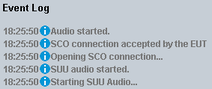

Hands-free audio profile testing is performed using the "Audio Measurement" firmware application of the R&S CMW.
The "Audio Measurement" application provides an audio signal for audio tests and can analyze an audio signal by the audio measurement option.
The audio board contains a speech codec board, providing an interface to the signaling units of the R&S CMW. It decodes the signal delivered by the "Bluetooth Signaling" application or encodes an audio signal and delivers it to the "Bluetooth Signaling" application.
The speech codec allows the "Bluetooth Signaling" application to support the whole transmission chain of the audio signal. In particular, from analog input into the EUT's microphone through the RF via a Bluetooth connection link, to the output of the AF signal or vice versa. The format of audio signal is configurable as digital (SPDIF) or analog (AF connectors).
- Option R&S CMW-B400B "Audio Analyzer/Generator" is compatible with any R&S CMW delivered after November 2011. It is also compatible with any R&S CMW delivered before November 2011, which has been upgraded with the upgrade kit R&S CMW-U5024.
- Option R&S CMW-U400 "Audio Analyzer/Generator" is compatible with any R&S CMW delivered before November 2011, which has not been upgraded with the upgrade kit R&S CMW-U5024.
- The audio board must be enhanced with a speech codec board (R&S CMW-B405A).
- The latest audio firmware/software package "Setup_CMW_AUDIO.exe" must be installed on the R&S CMW. This firmware application sends audio to and receives audio from the "Bluetooth Signaling" application and performs audio measurements.
- Option R&S CMW-KS602 is required for audio profiles hands-free and hands-free AG.
- Option R&S CMW-KS603 is required for audio profile A2DP.
The supported scenarios of audio measurements are listed in the following table:
Audio measurements scenario | Supported by profile |
|---|---|
Microphone test1) | hands-free |
Speaker test | hands-free, A2DP |
External analog/digital speech analysis2) | A2DP |
1) only mono 2) external audio analyzer like the R&S UPV required | |
The procedure outlined below is an example of audio measurements with the "Bluetooth Signaling" application. Refer to the user manual of the "Audio Measurement" application for more detailed information. See also "Audio Tests".
To set up an audio connection, perform the following steps:
Connect the EUT with the audio connectors provided by the R&S CMW with an installed audio board. Select the connectors according to the performed test. Refer to the user manual of the "Audio Measurement" application for the test setup instructions.
In "Bluetooth Signaling", set "Operating Mode" = Profile, see "Operating Mode, Profile".
Set the parameter "Profile", for example, "A2DP Sink".
Select the "CMW Role".
Specify speech codec. See "Voice Link > Speech Codec".
If CVSD, A-law, or μ-law coding is selected, the SCO connection is used. For mSBC codec, the eSCO connection is used.
Configure audio profile settings in accordance with the EUT configuration and capabilities. See "Audio Profiles Settings".
Configure authentication parameters "Pin Code", "Security Mode", and "Call is Active at Startup".
For A2DP connections, specify the following A2DP-specific parameters: "Sampling Frequency", "Channel Mode", "Block Bands", "Sub-Bands", "Allocation Method", and "Minimum/Maximum Bitpool".
Configure any other required settings (as for a connection without the audio board) and switch on the "Bluetooth Signaling".
Discover the EUT. See the steps 1 to 7 of the procedure for connection tests ("Executing Connection Tests").
Press the "Audio Measurement" softkey, see "Using the Shortcut Softkeys".
In the "Audio Measurement" application, select a scenario (for example, "External Analog Speech Analysis").
In the "Audio Measurement", select the "Bluetooth Signaling" as a controlling master application to which the speech codec is connected ("Controlled by" setting).
The "Audio Measurement" selects the coupled signaling application and the "Bluetooth Signaling" is connected to the speech codec.
Attach your Bluetooth device to the R&S CMW.
Open the "Bluetooth Signaling" firmware application and press [ON | OFF] until the "Bluetooth Signaling" control softkey indicates the "ON" state.
- For a USB connection, continue from step 17.
- For a connection to the default device, set its BD address and the page scan repetition mode. Continue from step 17.
- Otherwise ensure that the EUT is discoverable by enabling inquiry scan mode and then press the "Inquire" button. Wait for the EUT to be found and its BD address to be displayed in the "BD Address" dialog that pops up on the screen.
Wait for the inquiry process to finish or press "Stop Inquiry" at any time to return to the standby state.
Select the target device in the "For Paging" field. If the R&S CMW does not find any device during the inquiry, only the default device is available for selection.
Connect the hands-free profile.
Turn on the internal audio generator of the "Audio Measurement" application.
The "Audio Measurement" generates audio signal and sends it to the "Bluetooth Signaling" application.
Monitor the event log.

Analyze the audio signal, for example, using the "Audio Measurement" application. The Bluetooth TX measurements evaluate the different characteristics of the signal as well.